2015年から毎年実施している「決済動向調査」。2021年4月に実施した最新調査から、日本のキャッシュレス決済と消費者のデジタルシフトに関する結果の一部を紹介します。
QRコード決済アプリの利用率が全年齢層で昨年3月の調査から10%以上増加し、全体で54%と過去最高を記録。FeliCa型電子マネーの58%に迫る勢いであることがわかりました。個別のキャッシュレス決済サービスの利用率では「PayPay」が交通系ICカードを抜いて初の2位となりました。QRコード決済の利用はさらに拡大していくとみられます。
2021年4月調査のポイント
- QRコード決済アプリの利用は全体で54%と過去最高を記録、FeliCa型電子マネーの58%に迫る
- QRコード決済アプリ利用は全年齢階層で昨年から10ポイント以上増加、20代・30代ではFeliCa型電子マネーよりも高い利用率を記録
- クレジットカードは年齢が上がるほど利用率も向上、ブランドデビットカードは10代・20代で利用率が20%超
- 個別サービスの利用率では「楽天カード」（43%）が首位、2位は「PayPay」（37%）、3位は「交通系ICカード」（34%）
- 業種別では医療分野のキャッシュレス化に大幅な遅れ
- QRコード決済アプリはコンビニエンスストアでクレジットカードを圧倒、ファストフードでは同等
- コロナ禍でカード利用法も変化、消費者が自分でカード読み取ることが一般的に
- 生活サービスにおけるアプリ利用は「銀行口座の残高確認」が38%（前年比11ポイント増加）でトップ、直近1年間で急拡大
- お店が提供するアプリについては67%が利用経験あり、利用方法は「ポイントカードの表示」（67%）や「割引クーポンの利用」（65%）が上位を占める
- 飲食店でのモバイルオーダーは20%が利用経験あり、飲食店が提供するデジタルチャネル（Webサイト、アプリ）からの利用がメイン
- 自治体が発行する「プレミアム付商品券」は紙版とデジタル版での利用率それぞれ30%と11%、今後の利用意向は紙版・デジタル版とも60%以上が利用を希望
関連記事
- 「インフキュリオン、「決済動向2021年4月調査」を発表」、プレスリリース、2021年6月9日
- 「BNPL（後払い決済）の最新動向調査 6人に1人が利用経験あり」、インフキュリオン・インサイト、2021年7月21日
- 「日本のキャッシュレス決済の状況 ～決済動向調査２０２０～」、インフキュリオン・インサイト、2020年6月11日
目次
調査概要
当社では2015年以来、消費者2万人を対象とする「決済動向調査」を実施してきました。決済サービス利用状況に加え、買い物行動や金融デジタルチャネル利用もスコープに含めていることが特徴です。ライフスタイルに大きく左右される決済サービス利用を、より大きな視点から把握することに努めてきました。
同じセットの質問を毎回繰り返す定点観測的な手法での継続的データ収集に加え、特集テーマによる市場トレンド発見を目的としており、得られた示唆はプレスリリースやブログ、雑誌記事や社外講演等でタイムリーな発信を心掛けています。
当初は毎年3月に実施してきた「決済動向調査」でしたが、年に一度の調査では市場変化のスピードに追いつくのが難しくなってきています。2018年後半からの異業種大手によるQRコード決済参入と大型キャンペーン、2019年秋には経済産業省「キャッシュレス・ポイント還元事業」開始、そして2020年春以降はコロナ禍といった動きによって消費者行動も大きく変化し続けています。
加速する市場変化に対応するため、2019年以降は年3回程度まで頻度を上げて、市場変化のタイムリーな捕捉に努めています。今回は2021年4月に実施した最新調査の結果を紹介していきます。
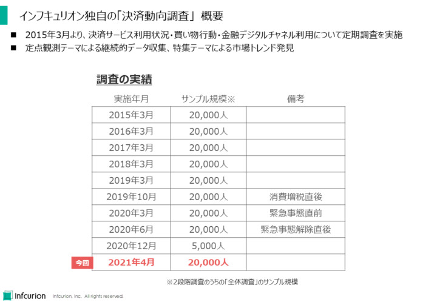
インフキュリオン独自の「決済動向調査」概要
調査方法の概要は下の図にまとめています。2万人を対象とする「全体調査」と824人を対象とする「詳細調査」の2段階で構成されるインターネット調査です。調査地域は全国、対象者条件は16才から69才の男女です。
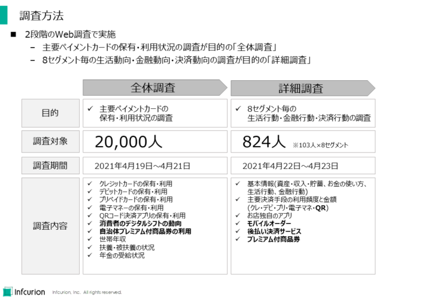
「決済動向2021年4月調査」 調査方法
「全体調査」では主要決済サービスの保有状況と利用状況を調査しています。「詳細調査」では生活行動・金融行動・決済行動に関して幅広くデータを収集します。
単に「どの決済サービスを使っているか？」ではなく、「どんな生活スタイルの人がどんな決済サービスを利用しているのか？」といった、突っ込んだ疑問に対して有益な示唆を得られるよう設計しています。
定点観測的に毎年繰り返している質問と、その年のテーマに沿って新しく設計している質問があります。2021年4月調査の特集テーマは以下でした：
- 消費者のデジタルシフトの動向
- 自治体プレミアム付商品券の利用動向
- モバイルオーダー
- 後払い決済サービス（BNPL）※こちらの記事で結果を紹介しています
QRコード決済のさらなる拡大
まず最初に、主要な５つのキャッシュレス決済サービスの利用率です。
- クレジットカード
- FeliCa型電子マネー
- 国際ブランドデビットカード（以下「ブランドデビット」）
- 国際ブランドプリペイドカード（以下「ブランドプリペイド」）
- QRコード決済アプリ
なお「利用率」は、2万人の回答者のうち「利用している」と回答した人の割合です。（2020年12月調査のみ回答者数は2万人ではなく5,000人となっています。）
まず直近2年間の利用率の推移が下のグラフです。
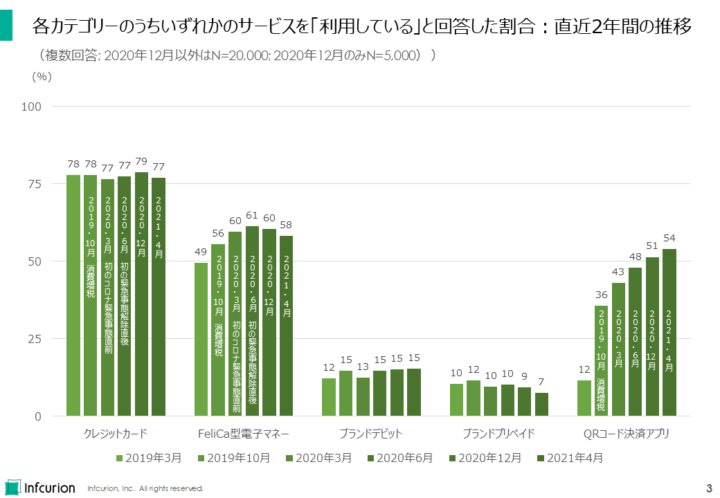
各カテゴリーのうちいずれかのサービスを「利用している」と回答した割合：直近2年間の推移（決済動向調査）
クレジットカードは2015年の調査開始以来、約78%で推移している、日本でもっとも利用されているキャッシュレス決済サービスです。消費増税やコロナ禍など様々な動きにもあまり影響を受けていません。減少もしていませんが増大もしない、成熟したサービスとなっています。
FeliCa型電子マネーは2018年までは利用率50%弱の水準で推移してきていましたが、経済産業省「キャッシュレス・ポイント還元」を追い風に利用率60%まで伸びました。しかし最近は勢いを失い、減少傾向になってしまっています。QRコード決済アプリと利用シーンが重複しがちで、ユーザーをそちらに奪われている可能性があります。
ブランドデビットは約15%の水準で最近は推移しています。劇的な拡大は見えませんが、実は若年層にじわじわ浸透していっていることが今回調査でわかっています。この点は後述します。
ブランドプリペイドは2019年10月調査での12%をピークに、利用率が減少傾向です。個人向けではQRコード決済やFeliCa型電子マネーとの差異化が難しいかもしれません。ブランドプリペイド自体は法人向けで新たな活用が拓けてきています。
QRコード決済アプリは登場してからの短期間でまさに劇的な拡大を記録してきました。勢いはまだ衰えておらず、今回調査では利用率54%と、FeliCa型電子マネーの58%に迫ろうとする勢いです。
下図は、調査開始当初の2015年3月からの利用率の推移をプロットしたものです。
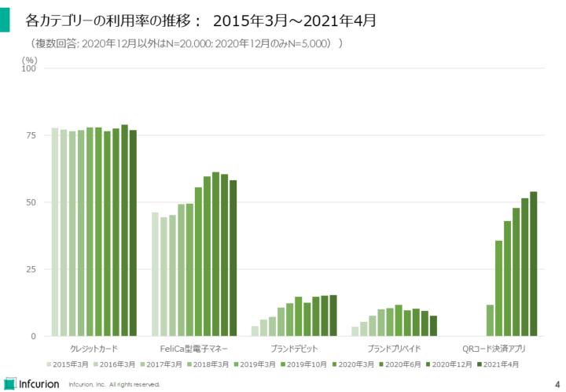
各カテゴリーの利用率の推移：2015年3月～2021年4月（決済動向調査）
ブランドデビットのポテンシャル
次に、主要な５つの決済サービスの利用率を年齢階層ごとにみてみます。下の表をご覧ください。2020年3月調査と比較した対前年増減値も併せて表示しています。
クレジットカードは年齢が上がるにつれて利用率も上がっていきます。
FeliCa型電子マネーも同様に、年齢が高いほうが利用率が高くなっていますが、対前年では59才までのすべての年齢階層で利用率減少となっています。
ブランドデビットは全体での利用率は15%ですが、10代・20代では利用率が20%を超えていることがわかりました。さらに20代は対前年で7ポイント増となっており、クレジットカード利用が定着していない若年層でユーザーを獲得していることが新たにわかりました。ブランドデビット発行に取り組んでいる銀行業界にとって朗報となりました。
ブランドプリペイドの利用率は10代で最大となっており、若年層向けプロダクトという性質を持っています。対前年で見ると全年齢階層で利用率減少となりました。
QRコード決済アプリは全年齢階層で利用率が45%以上、対前年でも全年齢階層で10ポイント以上の伸びを記録しており、まんべんなくユーザー層を拡大していっていることがわかりました。
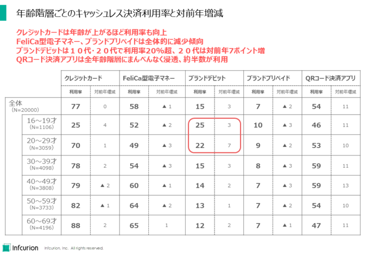
年齢階層ごとのキャッシュレス決済利用率と対前年増減（決済動向2021年4月調査）
利用率にみる決済サービス明暗
個別のキャッシュレス決済サービスの利用率は「楽天カード」が43%で首位の座を維持しています。
「PayPay」が37%で、初めて「交通系ICカード」を抜いて2位となりました。
全体的な傾向としては、QRコード決済アプリから多数が上位入りしており、利用が定着していることがわかりました。
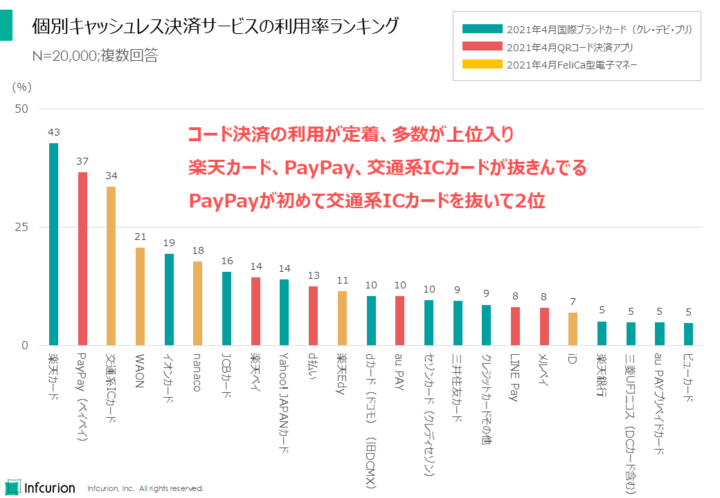
個別キャッシュレス決済サービスの利用率ランキング（決済動向2021年4月調査）
同じデータに、2020年3月調査での利用率を並べて示したものが下のグラフです。
首位の「楽天カード」は前年から3ポイント増、「PayPay」は何と8ポイント増です。「交通系ICカード」は2ポイント減で「PayPay」に利用率で追い抜かれてしまいました。
全体的には、直近1年間でのコード決済勢の利用率の伸びが印象的です。ただし大手コード決済勢のうち「LINE Pay」のみ例外となっており、対前年で利用率減少となっています。
また、老舗カード会社などを含む国際ブランドカードの伸び悩みも見て取れます。そんな中でも「楽天カード」、「イオンカード」、「Yaho0！JAPANカード」、「dカード」、「楽天銀行デビットカード」など新興勢は好調となっています。業界の構造変化が進行していることがわかります。
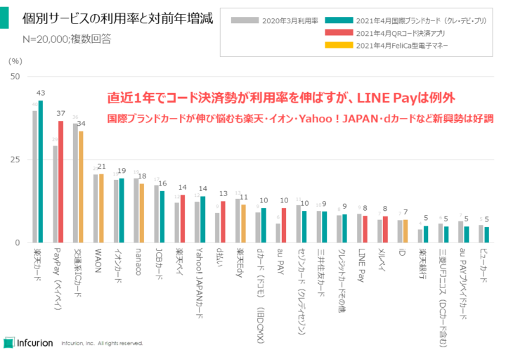
個別キャッシュレス決済サービスの利用率と対前年増減（決済動向2021年4月調査）
業種ごとのキャッシュレス普及度
多くの消費者が利用している主要な業種について、「もっとも利用している決済手段」を単一回答してもらった結果が下のグラフです。現金利用の多い順に並べています。
「病院、クリニック」は現金払いする消費者が70%を超えており、キャッシュレス化が大幅に遅れていることがわかります。
QRコード決済アプリは「ファストフード」で18%とクレジットカードと同等の利用率、「コンビニエンスストア」では32%とクレジットカードを圧倒し現金と並ぶ利用率を獲得しました。
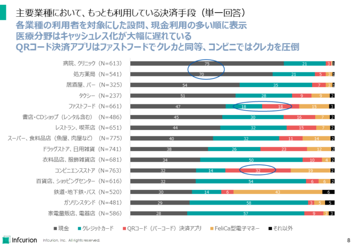
主要業種において、もっとも利用している決済手段（決済動向2021年4月調査）
コロナ禍で変化したカード利用法
直近1カ月におけるクレジットカードの具体的な利用方法のうちもっとも回数の多かったものを調査しました。2020年3月調査でも同様の設問があるので、今回（2021年4月調査）の結果と併せて示したものが下のグラフです。
今回調査では「お店で自分でカードを読み取らせた」がトップ、1年前から倍増しています。
逆に1年前のトップ「お店で店員にカードを渡した」は今回は半減。
コロナ禍でカード利用法も大きく変化したことがわかります。日本独特であった「店員にカードを渡して処理してもらう」というやり方が1年間で急減し、多くの国で標準となっている「消費者自身がカード読み取りを行う」が定着したことがわかります。
今後の決済端末のUI/UXの思想にも大きな影響を与えていくものを思われます。
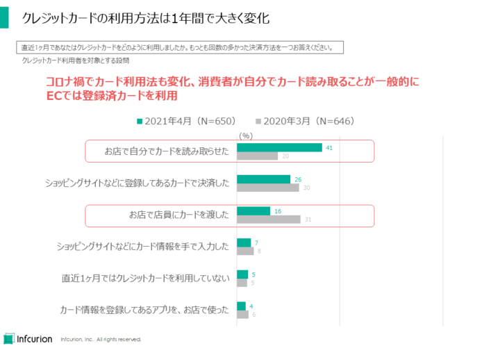
クレジットカードの利用方法は1年間で大きく変化（決済動向2021年4月調査）
デジタルシフトの定着化
生活サービスの各分野において、アプリ利用の有無を調査した結果が下の図です。2020年3月調査での結果と併せて示しています。
「銀行口座の残高確認」が38%（対前年11ポイント増）でトップとなりました。コロナ禍において、金融分野でのアプリ利用が急速に普及したことがわかります。
「音楽や動画の視聴」は36%（対前年4ポイント増）、「ネットショッピング」34%（対前年3ポイント増）、「ポイントカード機能の利用」33%（対前年5ポイント増）が高い利用率を記録しました。
一方で、コロナ禍での外出自粛など行動変化の影響を受け、「イベントチケットの購入」は対前年3ポイント減、「イベントチケットの購入」は同3ポイント減、「航空券や特急券の購入」は同4ポイント減となりました。
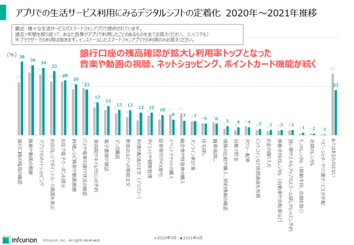
アプリでの生活サービス利用にみるデジタルシフトの定着化（決済動向2021年4月調査）
重要度を増すお店アプリ
QRコード決済アプリなど決済専業アプリに注目が集まる中、お店を営む事業者が独自に提供するアプリの利用も浸透していっています。
お店が提供するアプリは67%が利用経験あり。利用方法は「ポイントカードの表示」（67%）や「割引クーポンの利用」（65%）などレジ回りでの利用がメインとなっています。
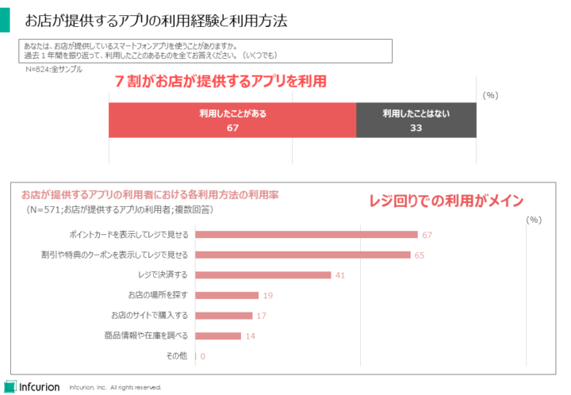
お店が提供するアプリの利用経験と利用方法（決済動向2021年4月調査）
どのような業種でのお店アプリが利用されているのかを示すものが下の図です。
「ファストフード」（45%）がトップ、次いで「コンビニエンスストア」（44%）、「ドラッグストア」（39%）が続きます。
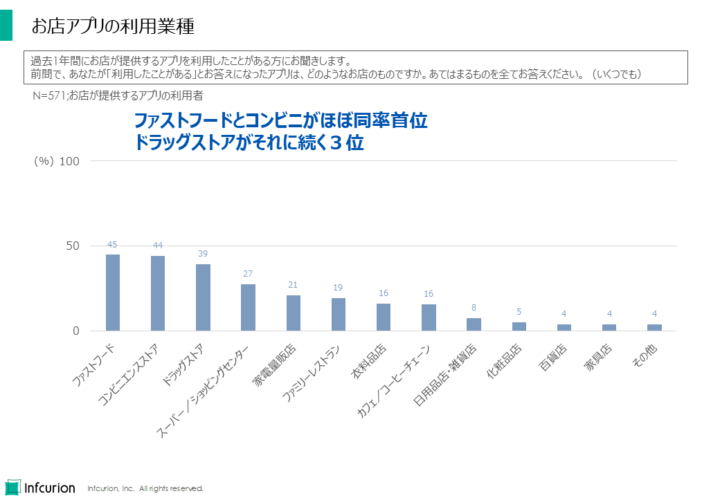
お店アプリの利用業種（決済動向2021年4月調査）
モバイルオーダー利用動向
「事前にスマホやパソコンから商品を注文しておいたものを、店舗で受け取る」というモバイルオーダー。最近の拡大が話題となっています。
今回調査によると、飲食店でのモバイルオーダーは20%が利用経験あり。
飲食店以外でのモバイルオーダー利用経験者はわずかしかおらず、今のところは「モバイルオーダーといえば飲食」という状況であることがわかりました。
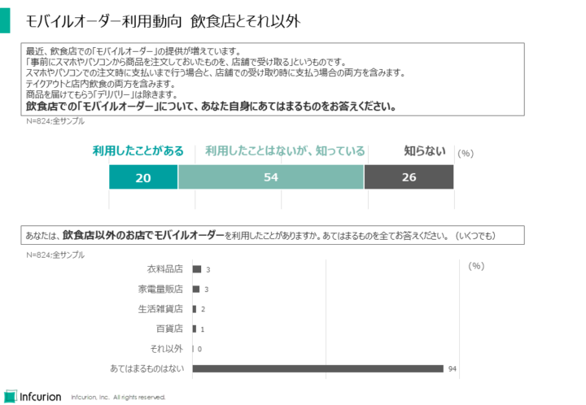
モバイルオーダー利用動向 飲食店とそれ以外（決済動向2021年4月調査）
今回調査では、モバイルオーダーはお店が提供するチャネル（アプリ／Webサイト）からの利用がメインであって、サードパーティが提供するサービスの利用は浸透していないことがわかりました。
個別の事業者ではマクドナルドでの利用が58%と圧倒的トップにあることがわかりました。
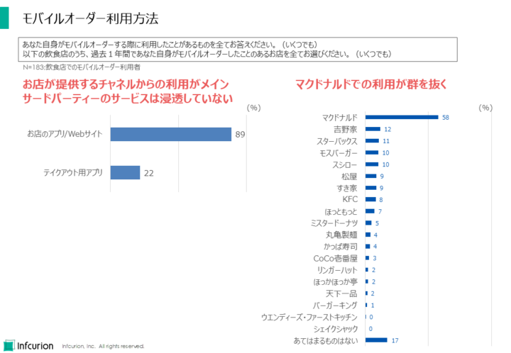
モバイルオーダー利用方法（決済動向2021年4月調査）
プレミアム付商品券
自治体が発行する「プレミアム付商品券」は紙での利用が30%、デジタル版での利用が11%となりました。
今後の利用意向は紙、デジタルともに60%以上が利用を希望しました。利用経験者の少ないデジタル版においても、今後の利用意向は紙版に劣らないという点は、今後のデジタル版の普及にとって追い風となると思われます。
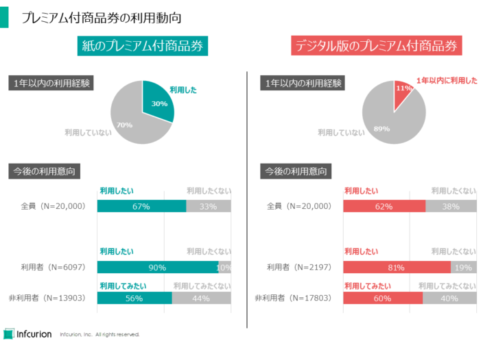
プレミアム付商品券の利用動向（決済動向2021年4月調査）
プレミアム付商品券の購入回数は「1回」（38%）が最多、購入金額は「1万円～2万円未満」（28%）が最多となりました。
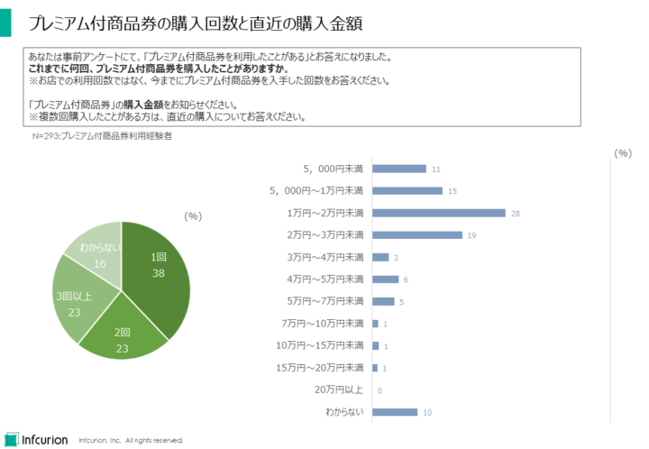
プレミアム付商品券の購入か数と直近の購入金額（決済動向2021年4月調査）
プレミアム付商品券の利用経験者に行動変化の有無を尋ねたところ、60%は「変化があった」と回答。主な変化として「普段はいかない店舗を利用するようになった」（44%）、「地域での買い物が増えた」（39%）が上位となり、地域経済振興という発行目的に対してプラスの効果が得られていることがわかりました。
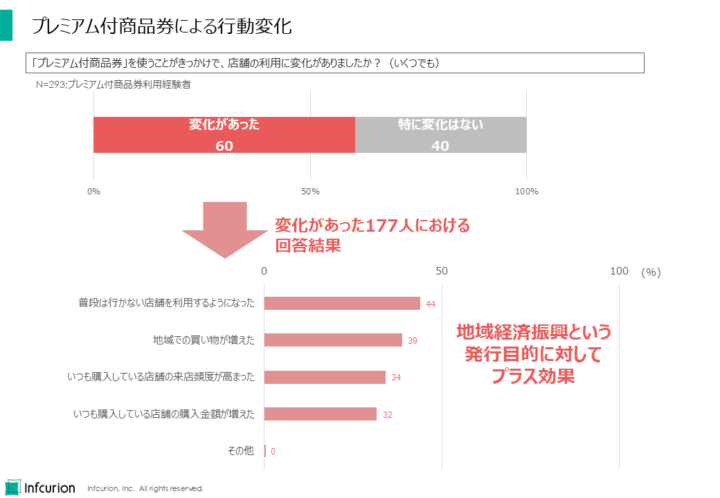
プレミアム付商品券による行動変化（決済動向2021年4月調査）
プレミアム付商品券の利用者の大多数が、「地域の活性化につながる」「お得に感じる」など好意的に評価していることがわかりました。
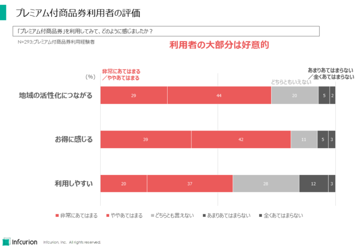
プレミアム付商品券利用者の評価（決済動向2021年4月調査）
※ＱＲコードはデンソーウェーブの登録商標です。


{kind=link}
{kind=link}
{kind=link}
{kind=link}
{kind=link}
{kind=link}
{kind=link}
{kind=link}
{kind=link}
{kind=link}
{kind=link}
{kind=link}
{kind=link}
{kind=link}
{kind=link}
{kind=link}
{kind=link}
{kind=link}